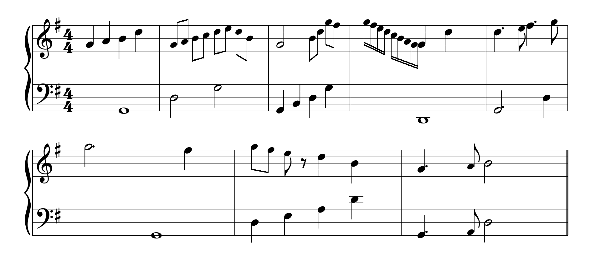
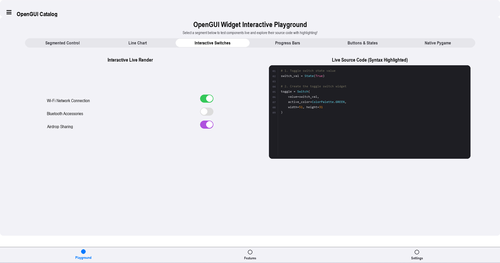
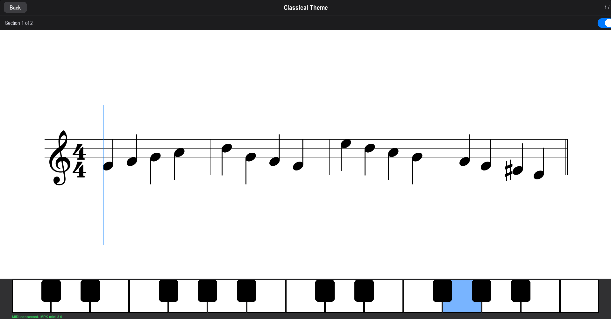

A fun challenge
My name is Marius. I'm learning piano and spend a lot of time on sites like MuseScore — browsing sheet music, listening to scores, exploring notation. At some point a thought stuck: could I render this myself, in code?
To make it a real challenge, I set a constraint: do it in pygame. No web stack, no existing notation engine — raw surfaces and rectangles. The result was PyLute, a library that parses MusicXML files and renders proportional sheet music on any pygame surface, at any size.
At this point it was a standalone side project. I had no idea where it would lead.
PyLute documentation →Then I wanted to practice — for free, forever
Alongside PyLute, I started using apps like Simply Piano, Flowkey, and Playground. They are well-built — but they all operate on the same model: a monthly subscription and a fixed song library. Want to learn a piece they do not offer? Too bad.
I wanted to practice any piece I could find a MusicXML file for — a Chopin étude, a pop song, a Bach prelude — without paying, forever. And I already had the hardest part built: a notation renderer.
What if I built my own app on top of PyLute and made it completely free?
So a renderer experiment became an ambition: a fully open-source piano learning application. But an application needs a UI, and that is where things got complicated.
The UI problem
Pygame UI libraries exist — pygame_gui, thorpy, pgzero and others. They work. But every one of them looks like software from 2004: flat grey rectangles, harsh borders, no animations, no visual cohesion. That was not an acceptable baseline.
I wanted something that felt like a modern desktop interface — smooth, rounded, with physical animations. Since nothing in the pygame ecosystem came close, I built one from scratch.
I called it PyLay — lay as in layout. A complete UI framework for pygame: theming system, spring-based physics, and a reactive layout engine that scales to any window size.
PyLay documentation →
PyLay — component overview
- Physics Animations
- Spring-based velocity-damped animations. Buttons bounce, panels slide with physical weight.
- Reactive Layout
- Rescales and reflows on window resize. Fractional sizing and flex-like stacks built in.
- 21 Widgets
- Button, Switch, Slider, TextField, SegmentedControl, LineChart, FilePicker, and more.
- Theming System
- Dark and light mode with a full iOS-style colour system applied across every screen.
- Observable State
- Reactive state with bind callbacks — UI rebuilds automatically, no manual re-renders.
- Page Router
- Animated transitions with navigation history. Sidebar drawers and bottom nav included.
Everything comes together
With PyLute rendering the sheet music and PyLay providing a coherent interface, the application came together. What started as a renderer experiment became a fully featured, free piano learning tool.
Pianove listens to a MIDI keyboard in real time, displays the notes to play, tracks accuracy, and guides the user through structured lessons — completely offline, at no cost. Any MusicXML file, any song, permanently.
- 16 built-in lessons, beginner to intermediate
- Import any MusicXML file and practice immediately
- Real-time MIDI keyboard input
- Built-in synthesiser — GeneralUser GS soundfont bundled
- Progress tracking, streaks, and weekly statistics
- Fully offline — no account, no subscription
- English and German language support

One small idea. Three open-source projects.
What began as a personal challenge — can I render sheet music in pygame? — grew into something larger. Pianove was submitted to the Free Software Foundation Europe's Youth Hacking For Freedom competition, which celebrates young developers building software that respects user freedoms.
Beyond the application itself, PyLute and PyLay are independently released, open-source libraries — reusable contributions to the pygame ecosystem. No vendor lock-in, no subscription, no telemetry.